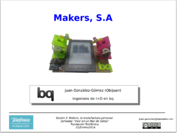

Click para ampliar
Contenido
[ocultar]Ficha
- Título: Makers, S.A
- Evento: Vivir en un Mar de Datos. Hacia una sociedad inteligente. Fundación telefónica
- Sesión 2: Makers, la manufactura personal
- Lugar: Espacio fundación telefónica
- Ponente: Juan González Gomez
- Duración: 15 minutos + mesa redonda
- Fecha: 21/01/2014
Resumen
En esta charla se cuenta la experiencia personal de Juan González (Obijuan) como maker en bq. Aunque su misión principal es trabajar en las impresoras 3D, se ha creado un grupo de makers que han aportado muchas soluciones a problemas internos de bq. Los makers tienen mucho que aportar a las empresas. ¡Contrata a un maker!
Descarga de la presentación
| 2014-01-21-bq-maker-sa-telefonica.pdf | Presentación. En PDF |
| 2014-01-21-bq-maker-sa-telefonica.odp | Fuentes de la presentación para Libre-office |
Vídeos de la Charla
- Vídeo resumen de las jornadas:
| 300|250</youtube> |
- Vídeo completo de las jornadas (Mi charla empieza en el minuto 42:20)
| 300|250</youtube> |
Vídeos mostrados durante la charla
- Vídeo 1: TODO
- Vídeo 2: Gusano mínimo con módulos REPYZ
- Vídeo 3: TODO
- Vídeo 4: TODO
- Vídeo 5: TODO
Fotos del evento
| Álbum de fotos de Cole (en G+) |
|---|
 (Click para ampliar) |
 (Click para ampliar)) |
 (Click para ampliar) |
 (Click para ampliar)) |
Más información
- bq
- Página de bqlabs en thingiverse
- Artículo sobre el departamento maker de bq, por Soraya Paniagua
Licencia
| |
Créditos
- Jesús Arroyo y Jose emilio Torres son los creadores del robot probador de tablets
- Ana de Prado es la creadora de la segunda generacion del probador de e-readers.
- Pablo clemente es el creador del trípode para la cámara térmica
- Miguel Angel de Frutos es el diseñador del chásis del renacuajobot
Agradecimientos
- A Alberto Méndez, CEO de bq por la confianza que nos está dando y por apostar por los makers. ¡Muchas gracias!
- A todos los equipos de bq, por su pasión e ilusión. Es un placer trabajar con vosotros. ¡Muchas gracias!
- A Alberto Valero, responsable de printbots y robótica educativa en bq. Increible el trabajo que estás realizando. Es un honor trabajar contigo. ¡Muchas gracias!
- A Pablo Clemente por toda su ayuda con la preparación y demos de la witbox. ¡Gracias Pablo!
- Al resto de makers de bq: Miguel Angel de Frutos, Ana de Prado, Jesús Arroyo, Antonio Castro, Jose Emilio Torres y Jon Goitia. Es todo un privilegio aprender de vosotros.
- A Soraya Paniagua, por invitarme a participar en este evento. ¡Muchas gracias!
- A Cole (Juan Manuel Amuedo) por las fotos alucinantes que sacó. ¡Gracias Cole!
- A la Fundación Telefónica por la organización del evento. ¡Muchas gracias!
- A todos los makers. ¡Gracias por vuestro apoyo!
Noicias
- 26/Enero/2014: Publicada esta página
|
|
Proyecto Clone wars: Construye tu impresora 3D opensource! |
 |
Proyecto RepRap: Impresoras 3D auto-replicantes. El origen de la revolución de las impresoras 3D opensource |
|
|
Obijuan Academy, Tu academia rebelde! ;-) |